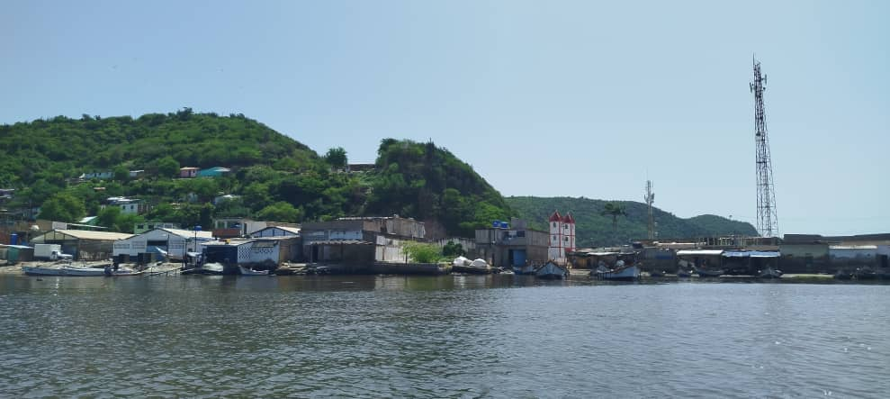
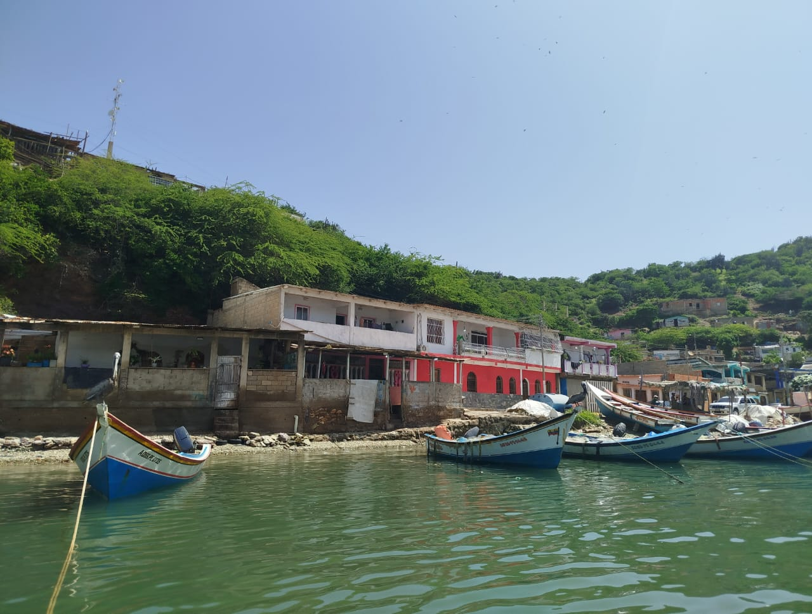
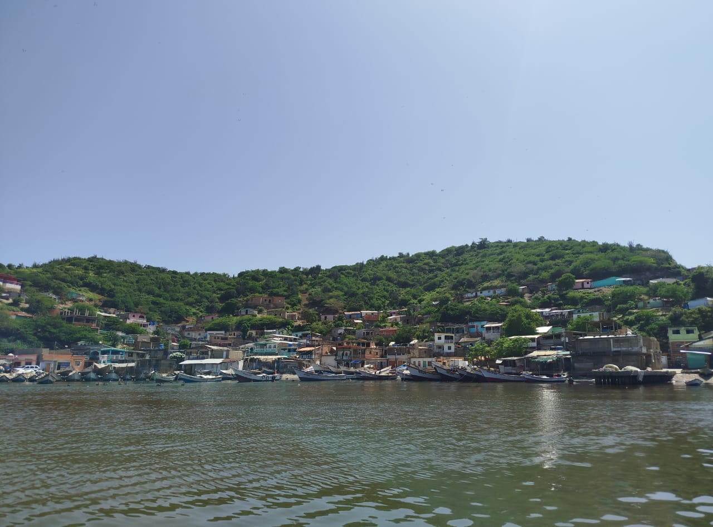
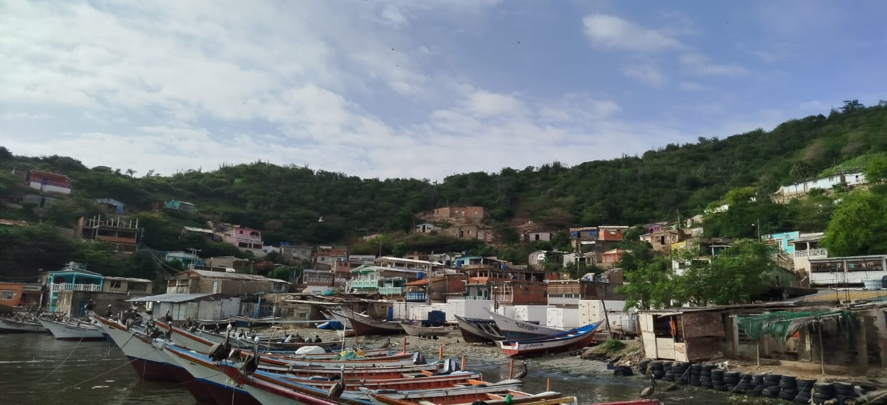
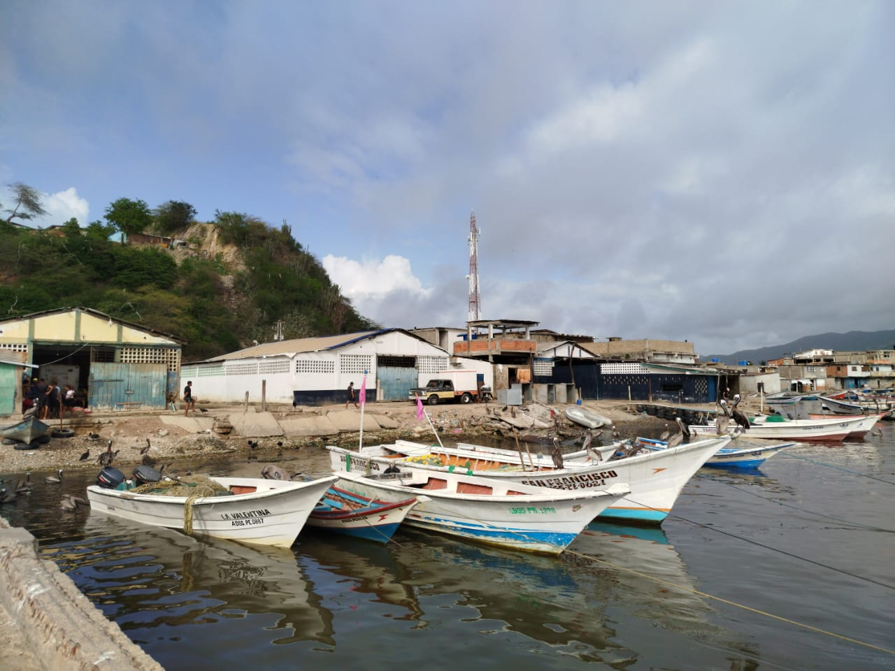

La Playa El Dique en la parroquia El Morro de Puerto Santo es un enclave de vital importancia económica para la comunidad local, funcionando como el corazón palpitante de la actividad pesquera artesanal en la zona.



Más que un destino balneario, es un puerto natural donde convergen los esfuerzos de los pescadores para la captura de sardina, especie de la cual el Estado Sucre es el principal productor nacional, junto con otras variedades de pescado. Sus aguas y cercanía a zonas de alta concentración biológica la convierten en el punto de mayor desembarco y beneficio para el pescador, asegurando un sustento diario y la continuidad de una tradición marítima ancestral.

Cómo Llegar
Al acceder a El Morro de Puerto Santo, mantente en la vía principal o Mariscal hasta la Iglesia San Ramón; allí, gira a la izquierda para adentrarte en el sector El Dique y, a pocos metros, la playa se desplegará a tu izquierda
Mejores Días
El encanto productivo de la Playa El Dique alcanza su plenitud entre los meses de mayo hasta principios de diciembre, marcando la ventana ideal para una visita. Durante este periodo, la playa cobra vida en su máximo apogeo de pesca, con los pescadores en plena faena y un constante ir y venir de embarcaciones cargadas.
¿Por Qué Visitarla?
La Playa El Dique debe ser visitada no por su atractivo balneario, sino por ser el epicentro de la cultura pesquera en El Morro de Puerto Santo. Permitiendo a los visitantes observar de cerca la intensa faena diaria de los pescadores, el desembarco de la sardina
La Playa de El Dique
El paisaje de El Dique está moldeado por su función utilitaria y productiva. A diferencia de las playas turísticas, su orilla se caracteriza por la presencia constante de embarcaciones de pesca, lanchas y peñeros, anclados o listos para zarpar, evidenciando el trabajo duro y continuo. Las estructuras en la costa, visibles en las imágenes, son funcionales para el oficio: resguardos, almacenes o pequeños centros de procesamiento, más que posadas o restaurantes turísticos. El telón de fondo de colinas cubiertas de vegetación verde crea un contraste pintoresco con la orilla ocupada, mientras que el olor a salitre y a pescado fresco impregna el ambiente, testimonio de la riqueza del mar.
La playa El Dique es el centro social y laboral de los habitantes de El Morro de Puerto Santo, personificando el espíritu y la identidad del pescador. Es un espacio de encuentro, cooperación y esfuerzo colectivo, donde las faenas de pesca se realizan de manera comunitaria. Aunque no atrae a bañistas en busca de ocio, su valor reside en la sostenibilidad de un modo de vida y en la provisión de alimento y sustento. Es una playa que respira autenticidad y trabajo, un sitio donde la relación entre el hombre y el mar es directa, profunda y fundamentalmente productiva.
